직접 만들기
사업 아이디어를 자연어로 설명하고 간단한 웹 프로토타입을 생성합니다.
중장년 창업자가 ChatGPT를 활용해 사업 아이디어를 직접 화면으로 구현하고, GitHub와 Vercel을 이용해 실제 웹에 배포하는 바이브코딩 입문 실습입니다.
PM/서비스 기획자로 9년 이상의 경험을 쌓았습니다. 기획부터 디자인, AI 바이브코딩까지 직접 하는 기획자로 활동하며, 예비 창업자·재직자·미래의 기획자를 대상으로 기술 교육을 진행하고 있습니다.
이 수업은 코딩 문법을 배우는 개발 수업이 아니라, 창업자가 AI를 활용해 자신의 아이디어를 직접 화면으로 구현해보는 입문 실습입니다. ChatGPT 채팅에서 간단한 프로토타입을 만든 뒤 사이트 형태로 공유하고, 마지막에는 GitHub·Vercel을 이용해 실제 웹에 배포합니다.
사업 아이디어를 자연어로 설명하고 간단한 웹 프로토타입을 생성합니다.
AI가 만든 결과를 확인하고 필요한 부분을 대화로 수정한 뒤 사이트 형태로 공유합니다.
ChatGPT로 만든 소스코드를 GitHub에 직접 저장하고 Vercel을 통해 실제 웹사이트로 배포합니다.
바이브코딩 이해 · 오늘 사용할 도구
ChatGPT 채팅으로 프로토타입 만들기
GitHub에 소스코드 올리기 · 직접 업로드 → Work 모드 push
쉬는 시간
배포하기 · Vercel (선택: Netlify Drop)
오늘 사용한 방식 정리 · 마무리
(심화) 입력한 데이터 저장하기 · Netlify Forms · Supabase · 구글 시트(선택) — 자율 실습
창업자의 관점에서 바이브코딩이 무엇인지 이해하고, 오늘 사용할 ChatGPT·GitHub·Vercel이 각각 어떤 역할을 하는지 살펴봅니다.
“코드가 존재한다는 사실조차 잊고, 바이브(느낌)에 온전히 맡기는 새로운 코딩.”
한마디로, 코드를 한 줄씩 직접 짜는 대신 원하는 것을 말(자연어)로 설명하고 AI가 코드를 만들게 하는 방식입니다. 콜린스 사전은 “자연어 지시를 받은 인공지능으로 컴퓨터 코드를 작성하는 것”으로 정의합니다.
출처: Wikipedia · Vibe coding · TechCrunch(2025.3.6) · Collins Dictionary(2025.11.6) · The New Stack
창업자가 모든 코드를 직접 작성할 필요는 없습니다. 다만 아이디어를 AI에게 설명하고 빠르게 화면으로 확인할 수 있다면 개발 전에 사업 아이디어를 구체화하고 다른 사람에게 보여주며 빠르게 검증할 수 있습니다.
머릿속 사업 아이디어를 실제 화면으로 만들어봅니다.
문구·색상·구성을 AI와 대화하며 변경합니다.
완성된 결과를 URL로 만들어 고객·동료에게 보여줍니다.
아이디어를 빠르게 화면으로 만들어 프로토타입을 확인합니다.
Work 모드에서 만든 결과물을 이어서 다루고, GitHub 업로드까지 요청해봅니다.
만든 소스코드를 GitHub에 직접 저장한 뒤 Vercel로 실제 웹주소에 배포합니다.
작게 만들고, 빨리 배우기. 아래는 일반적으로 창업자나 기획자가 서비스를 처음 만들어야 할 때 알아야 할 필수 기초 용어들입니다.
고객의 문제를 해결하는 제품·서비스와 경험 전체입니다. 화면에서 시작해 주문, 배송, 배송 완료까지 고객이 실제로 겪는 사용자 흐름도 포함합니다.
아이디어와 사용자 흐름을 빠르게 확인하는 초기 모형입니다. 실제 결제나 배송이 작동하지 않아도 되며, 고객이 서비스를 이해하고 사용할 수 있는지 확인하는 데 씁니다.
고객이 핵심 가치를 실제로 얻는지 확인하는 가장 작은 서비스입니다. 기능을 적게 넣는 것이 목적이 아니라, 가장 중요한 가정을 실제로 검증하는 것이 목적입니다.
가상의 창업자가 “퇴근 후 저녁 준비가 부담스러운 직장인에게 주 1회 반찬을 배송한다”는 아이디어를 갖고 있다고 가정해보겠습니다. 이 서비스의 프로덕트는 홈페이지 하나가 아니라 메뉴 선택, 신청, 배송, 재주문까지의 경험 전체입니다.
머릿속 아이디어를 글로만 정리한 뒤, 개발자나 제작 업체에 “반찬 주문 앱을 만들고 싶다”고 의뢰하기 쉽습니다. 어떤 화면이 필요한지, 고객이 어떤 순서로 신청하는지 직접 확인하기 어렵고, 수정 요청이 늘어날수록 시간과 비용도 커집니다.
처음부터 앱·결제·배송관리 기능을 모두 만들려 하면, 고객이 실제로 주문할지 확인하기 전에 큰 비용이 들어갈 수 있습니다.
비개발자도 AI에게 서비스 설명을 입력해 메뉴, 가격, 신청 버튼이 있는 한 장의 화면을 먼저 만들 수 있습니다. 이 화면을 고객에게 보여주며 메뉴와 가격, 신청 흐름을 이해하는지 확인한 뒤 필요한 기능만 다음 단계에서 개발합니다.
바이브코딩은 개발자를 완전히 대신하는 일이 아니라, 창업자가 더 구체적인 화면과 요구사항으로 검증·협업하는 방법입니다.
처음부터 주문 앱을 만들 필요는 없습니다. 아래 수준이면 초기 검증을 시작할 수 있습니다.
이번에는 ChatGPT를 기반으로 프로토타입의 초기 버전을 함께 만들어보겠습니다. 짧은 실습으로 화면과 기능이 만들어지는 과정을 익힌 뒤, 같은 방식을 활용해 홈페이지 프로토타입 제작으로 넘어갑니다.
오늘 실습은 ChatGPT 데스크톱 앱 하나로 진행합니다. ChatGPT 화면에서 Chat과 Work를 전환해 사용할 수 있으며, 이번 수업에서도 별도의 코딩 앱을 추가로 설치하지 않고 하나의 ChatGPT 데스크톱 앱에서 실습합니다.
아래 실습 A·B·C는 서로 연결되지 않은 독립 예제입니다. 각 실습을 처음부터 끝까지 순서대로 진행하고, 다음 실습으로 넘어갑니다.
핵심 경험: 엑셀·CSV 파일을 첨부하면 AI가 실제 데이터를 읽고 표와 그래프로 시각화할 수 있다는 점을 확인합니다.
첨부한 파일의 매출 데이터를 분석해서 한 페이지짜리 대시보드를 만들어줘. - 상단에는 총매출·총이익·마진율 요약 카드 - 가운데에는 월별 매출 추이 그래프 - 하단에는 상품별 매출 표 - 첨부한 파일의 실제 데이터만 사용 - PC와 모바일에서 모두 보기 편한 화면으로 구성
“대시보드를 좀 더 보기 좋게 바꿔줘.”
무엇을 바꿀지 AI가 임의로 정합니다. 결과가 매번 달라지고, 멀쩡하던 부분까지 바뀔 수 있습니다.
“상품 표에 상품명 검색창만 추가해줘. 기존 데이터와 그래프는 변경하지 마.”
바꿀 곳과 바꾸면 안 되는 곳이 분명해서, 원하는 부분만 정확히 수정됩니다.
현재 대시보드에서 다음 부분만 수정해줘. [수정할 내용] - 상품 표 위에 상품명 검색창 추가 - 카테고리 필터 추가 (전체 / 패션 / 신발 / 뷰티 / 레저 / 디지털) - 그래프의 X축은 '월', Y축은 '매출(원)'으로 명확하게 표시 [제약조건] - 화면 폭이 좁은 모바일에서는 상품 표를 카드 형태로 표시 - 외부 서버나 추가 데이터는 사용하지 않음 [금지조건] - 첨부한 데이터 값과 요약 카드의 계산 결과는 변경하지 마 - 요청하지 않은 영역의 색상·문구·배치는 변경하지 마
.html 파일을 브라우저로 열어 확인합니다.F12 → 휴대폰 모양 아이콘(기기 모드)을 눌러 스마트폰 화면으로 보기핵심 경험: 계산 로직을 자연어로 알려주면 단순한 화면뿐 아니라 실제로 값이 계산되는 기능도 만들 수 있습니다.
상품 가격 계산기 프로토타입을 만들어줘. [입력] - 상품 가격 - 구매 수량 - 할인율(%) [계산식] - 할인 전 금액 = 상품 가격 × 구매 수량 - 할인 금액 = 할인 전 금액 × 할인율 ÷ 100 - 최종 결제 금액 = 할인 전 금액 - 할인 금액 위 계산식은 그대로 사용하고 임의로 바꾸지 마. 입력창, 계산하기 버튼, 계산 결과가 보이는 화면으로 만들어줘.
Win + Shift + S / Mac: Cmd + Shift + 4Ctrl/Cmd + V) 파일 첨부 버튼으로 올립니다.첨부한 캡처 화면을 확인해줘. [어디에서] 계산 결과 영역 [무엇을 했더니] 상품 가격 10000, 수량 3, 할인율 10을 입력하고 계산하기를 눌렀더니 [어떤 결과가 나왔고] 최종 결제 금액이 30,000원으로 표시돼 [원래는] 계산식대로라면 27,000원이 나와야 해 원인을 찾아서 이 부분만 고쳐줘. 정해 둔 계산식과 다른 화면은 변경하지 마.
현재 계산기에서 다음 부분만 수정해줘. - 값을 입력하면 결과가 자동으로 계산되게 변경 - 모든 값을 비우는 '초기화' 버튼 추가 - 최종 결제 금액을 가장 크게 강조 - 입력창과 버튼을 중장년층도 사용하기 쉽게 크게 구성 기존 계산식은 변경하지 마.
핵심 경험: 데이터를 추가(Create)·조회(Read)·수정(Update)·삭제(Delete)하는 CRUD를 직접 경험하고, 화면에서 동작하는 것과 데이터가 저장되는 것의 차이를 확인합니다.
프로젝트 관리용 TODO 체크리스트 프로토타입을 만들어줘. - 할 일 목록 보기 - 새로운 할 일 추가 - 할 일 내용 수정 - 할 일 삭제 - 완료 여부 체크 - 완료 / 진행중 / 대기 상태 구분 먼저 브라우저 화면에서 추가·수정·삭제가 동작하도록 만들어줘. 외부 서버나 데이터베이스는 사용하지 마.
현재 TODO 체크리스트에 브라우저 로컬 저장 기능을 추가해줘. - 할 일을 추가·수정·삭제하거나 상태를 변경할 때마다 localStorage에 자동 저장 - 브라우저를 새로고침해도 기존 목록과 상태가 유지 - 외부 서버, 로그인, 데이터베이스는 사용하지 않음 기존 디자인과 CRUD 기능은 변경하지 마.
localStorage는 현재 사용하는 브라우저에만 저장되므로 다른 컴퓨터나 다른 사용자와 공유되지 않습니다. 실제 예약·회원·주문 서비스에는 별도의 서버와 데이터베이스가 필요합니다.대시보드·계산기·체크리스트 실습은 여기서 종료합니다. 이제 새 대화를 열고, 하나의 홈페이지를 처음부터 만들고 수정하는 실습을 시작합니다. 이 파트부터는 하나의 홈페이지 프로토타입을 계속 생성·수정합니다. 예시 프롬프트 안에서는 가상의 서비스명 ‘LocalLink’를 사용합니다.
처음부터 모든 내용을 한 번에 요청하지 않고, 메뉴 구조를 먼저 잡은 뒤 메뉴별로 페이지를 하나씩 채워 나갑니다.
가상의 스타트업 'LocalLink'의 회사 홈페이지를 만들어줘. [대상] 지역 소상공인과 협업하려는 브랜드 담당자 [메뉴] 상단에 '홈 / 회사 소개 / 문의하기' 메뉴를 만들고, 메뉴를 누르면 해당 화면으로 전환되게 해줘. [홈 화면 구성] - 핵심 소개 문구 - LocalLink가 제공하는 가치 3개 - 이용 과정 3단계 - '협업 방식 보기' 버튼 (누르면 이용 과정 영역으로 이동) [회사 소개 · 문의하기 화면] 지금은 제목과 '준비 중' 안내만 넣어줘. 내용은 이후에 하나씩 추가할 거야. [디자인] - 신뢰감 있는 남색과 밝은 배경 - 글자를 충분히 크게 구성 - 스마트폰에서도 보기 편한 화면 하나의 HTML 파일로, 결과를 바로 확인할 수 있도록 미리보기 가능한 형태로 만들어줘.
'회사 소개' 메뉴 화면의 내용을 채워줘. - 회사 비전 한 문장 - LocalLink가 해결하는 문제 3가지 - 팀 소개 3명 (가상의 이름, 역할, 한 줄 소개) - 회사 연혁 3개 (2025년 설립부터) 홈 화면, 문의하기 화면, 상단 메뉴는 변경하지 마.
'회사 소개' 화면에서 다음 부분만 수정해줘. - 팀 소개를 사진 자리가 있는 카드 형태로 변경 - 회사 연혁을 세로 타임라인 형태로 변경 - 비전 문장을 화면 상단에 크게 강조 다른 화면과 메뉴, 기존 문구는 변경하지 마.
'문의하기' 메뉴 화면을 만들어줘. - 입력 항목: 이름, 회사명, 이메일, 문의 내용 - '문의 보내기' 버튼 - 버튼을 누르면 화면 아래 '접수된 문의 목록'에 방금 입력한 내용이 추가되게 해줘 외부 서버나 데이터베이스는 사용하지 마. 홈 화면과 회사 소개 화면, 상단 메뉴는 변경하지 마.
localStorage를 쓰더라도 내 브라우저에만 남기 때문에, 고객이 보낸 문의를 대표가 다른 컴퓨터에서 확인할 수는 없습니다.'문의하기' 화면에서 다음 부분만 수정해줘. - 이름, 이메일, 문의 내용이 비어 있으면 '필수 항목을 입력해주세요' 안내 표시 - 이메일 형식이 틀리면 안내 문구 표시 - 문의를 보내면 '문의가 접수되었습니다' 완료 메시지 표시 - 폼 위에 '이 화면은 시연용이며 입력 내용은 저장·발송되지 않습니다' 안내 문구 추가 외부 서버나 데이터베이스는 사용하지 마. 다른 화면과 메뉴는 변경하지 마.
2.2 실습에서 익힌 확인·개선 방법을 이번 홈페이지에도 그대로 적용합니다.
.html 파일로 다운로드해 열어봅니다.index.html로 저장하고, 더블클릭해 브라우저에서 열립니다. 메뉴 전환·버튼·문의 폼이 미리보기와 똑같이 동작하는지 확인합니다. 이 파일은 2.4와 3·4장에서 계속 사용합니다.index.html 한 파일에 들어 있습니다. 하지만 실제로 운영되는 서비스는 화면별 파일, 디자인 파일, 동작 파일, 이미지, 그리고 회원·문의·주문 데이터를 저장하는 서버와 데이터베이스, 관리자 페이지 등 수십~수천 개의 파일과 시스템으로 이루어져 있습니다.2.3에서 저장한 index.html을 열어보며, 오늘 만든 결과물이 어떤 형태의 파일인지 간단히 이해합니다. 코드를 외울 필요는 없고, “이 파일은 이렇게 생겼구나”를 확인하는 것이 목표입니다.
HTML 파일은 특별한 프로그램이 있어야 열리는 파일이 아니라, 글자로 이루어진 텍스트 파일입니다. 브라우저로 열면 화면이 보이고, 메모장 같은 텍스트 편집기로 열면 그 화면을 만드는 코드가 보입니다.
index.html 우클릭 → 연결 프로그램 → 메모장Ctrl + F(Mac: Cmd + F)로 홈 화면의 제목 문구를 검색해 일부 글자를 수정합니다.*.txt)로 되어 있으면 index.html.txt로 저장되어 브라우저에서 열리지 않습니다. 파일 형식은 모든 파일, 인코딩은 UTF-8로 저장합니다. 문구 수정이 아닌 기능 수정은 코드를 망가뜨리기 쉬우므로 AI에게 요청하는 편이 안전합니다.파일 이름 뒤의 .html을 확장자라고 하며, 컴퓨터는 이 확장자를 보고 “브라우저로 여는 웹페이지 파일”이라고 판단합니다. 다만 Windows와 Mac은 기본 설정에서 확장자를 숨기는 경우가 많아, 파일 이름이 index로만 보일 수 있습니다.
| 구분 | 확장자가 안 보일 때 설정 방법 | 파일 아이콘 |
|---|---|---|
| Windows 11 | 파일 탐색기 → 보기 → 표시 → 파일 확장명 체크 | 기본 브라우저(크롬·엣지·사파리 등)의 아이콘으로 표시 |
| Windows 10 | 파일 탐색기 → 보기 탭 → 파일 확장명 체크 | |
| Mac | Finder → 설정 → 고급 → 모든 파일 확장자 보기 체크 |
메모장으로 연 코드를 위에서 아래로 훑어보면, 대부분의 HTML 파일은 아래와 같은 공통된 뼈대를 갖고 있습니다.
<!DOCTYPE html> ← ① 시작: "이 파일은 HTML 문서입니다"라는 선언
<html lang="ko"> ← ② HTML 문서의 시작
<head> ← ③ 화면에 보이지 않는 설정 영역
<title>LocalLink</title> (브라우저 탭에 보이는 제목, 디자인 설정 등)
<style> ... </style> (색상·글자 크기 같은 디자인)
</head>
<body> ← ④ 실제로 화면에 보이는 내용
<h1>지역과 브랜드를 잇는 LocalLink</h1>
...
<script> ... </script> (버튼·메뉴 전환 같은 동작)
</body>
</html> ← ⑤ 끝: HTML 문서가 여기서 닫힘
파일의 첫 줄과 마지막 줄입니다. 대부분의 태그는 <이름>으로 열고 </이름>으로 닫습니다.
탭 제목, 글꼴, 색상 같은 설정이 들어갑니다. 화면 본문에는 나타나지 않습니다.
메뉴, 제목, 버튼, 문의 폼처럼 실제 화면에 보이는 내용이 들어갑니다.
HTML 파일은 서버나 인터넷 연결 없이 내 컴퓨터의 브라우저만으로 열립니다. 이메일 첨부, USB, 사내 메신저, 공유 폴더 등으로 파일을 전달하면 받은 사람도 더블클릭만으로 같은 화면을 볼 수 있습니다. 별도 프로그램 설치나 회원가입도 필요 없습니다.
인터넷이 연결되지 않은 내부망 PC에서도 열 수 있도록 만들어줘. - 외부 라이브러리, 웹 글꼴, 외부 이미지, CDN 링크는 사용하지 마 - 그래프가 필요하면 외부 라이브러리 없이 직접 그려줘 - 필요한 디자인과 동작은 모두 index.html 한 파일 안에 넣어줘 - 외부 서버나 데이터베이스는 사용하지 마
확인 방법: 와이파이를 끄거나 랜선을 뺀 상태에서 파일을 열어 화면이 그대로 보이는지 확인합니다.
<!DOCTYPE html>부터 마지막 줄 </html>까지 빠짐없이 복사해야 합니다. 답변이 중간에 끊겨 </html>이 없다면 “이어서 끝까지 작성해줘”라고 요청합니다.2.3에서 만든 index.html을 인터넷에 공개하려면, 먼저 소스코드를 보관할 온라인 공간이 필요합니다. GitHub에 가입해 Repository를 만들고, 소스코드를 직접 올려본 뒤 ChatGPT Work 모드로 업로드와 수정 반영(push)을 이어가는 방법까지 익힙니다.
2.3에서 ChatGPT로 만들고 저장한 홈페이지 소스코드입니다.
소스코드와 변경 이력을 온라인에 저장합니다.
GitHub에 올린 소스코드를 가져와 실제 웹주소로 배포합니다.
GitHub는 배포 서비스가 아니라 소스코드와 변경 이력을 보관하는 공간입니다. 먼저 계정을 만들고, 오늘 만든 홈페이지를 담을 Repository를 하나 만듭니다.
locallink-homepage — 영문 소문자와 하이픈(-)을 사용하면 주소가 깔끔합니다. 설명(Description), README·.gitignore·라이선스 추가 등 나머지 항목은 기본값 그대로 두어도 됩니다.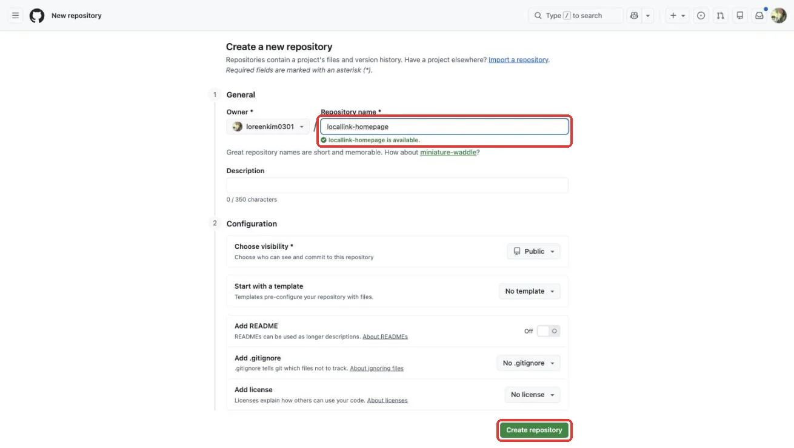
locallink-homepage를 입력하면 “is available”(사용 가능) 표시가 나옵니다. 공개 범위는 Public 그대로 두고, README·.gitignore·license도 기본값 그대로 Create repository를 누릅니다.https://github.com/내아이디/locallink-homepage가 내 Repository 주소입니다. 3.3에서 사용하므로 메모해둡니다.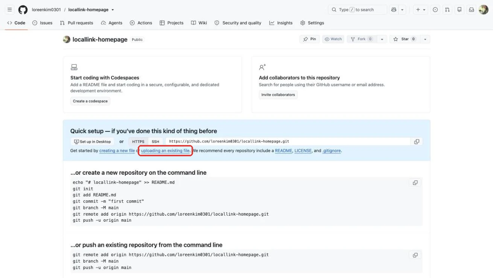
쉽게 말해, 내 컴퓨터에 있는 index.html 파일을 GitHub라는 온라인 보관함에 올려두는 작업입니다. 이메일에 파일을 첨부해 두는 것과 비슷하지만, GitHub에 올려두면 이런 점이 좋습니다.
내 컴퓨터에서 파일을 지우거나 컴퓨터가 고장 나도, GitHub에서 언제든 다시 내려받을 수 있습니다.
파일을 올릴 때마다 기록이 남아서, 수정하다 망가져도 잘 동작하던 이전 버전을 찾아 복구할 수 있습니다.
4장의 Vercel이 이 파일을 가져가 웹사이트로 만들고, 개발자·디자이너에게는 링크 하나로 코드를 전달할 수 있습니다.
먼저 손으로 한 번 해봐야, 나중에 AI에게 맡겼을 때 무엇이 어디로 올라가는지 확인할 수 있습니다.
index.html을 업로드합니다.index.html이어야 4장에서 배포할 때 첫 화면으로 인식됩니다.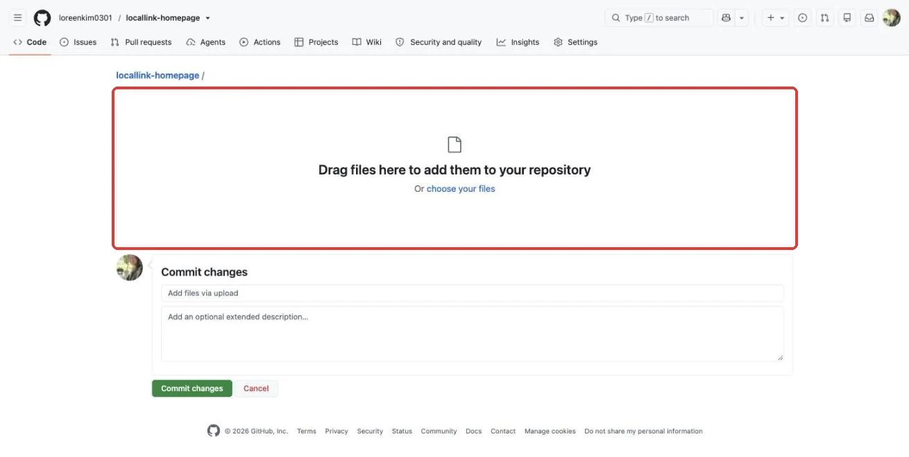
index.html을 끌어다 놓거나 choose your files로 파일을 선택합니다.Index.html과 index.html을 사실상 같은 파일로 취급하지만, GitHub와 웹 서버는 대문자와 소문자를 다른 글자로 구분합니다. 그래서 내 컴퓨터에서는 잘 열리던 파일이 배포 후에는 “페이지를 찾을 수 없음(404)”으로 나올 수 있습니다.index.html (O) / Index.html, INDEX.HTML (X)index.html.txt나 index (1).html처럼 저장되지 않았는지 확인합니다.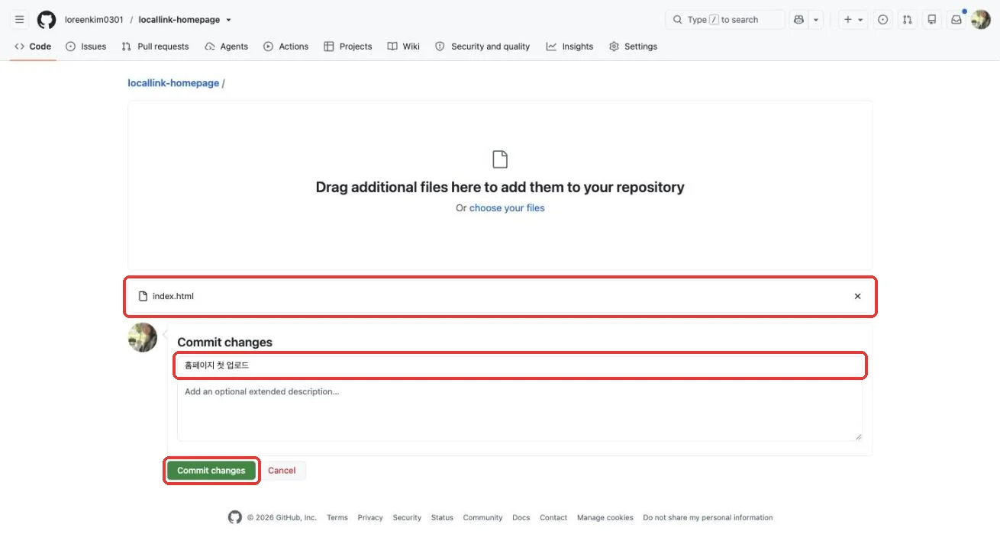
index.html이 목록에 올라온 것을 확인하고, 커밋 메시지(예: “홈페이지 첫 업로드”)를 적은 뒤 Commit changes를 누릅니다.Add files via upload 같은 기본 문구를 자동으로 넣어 저장합니다.index.html이 Repository 목록에 보이면 업로드 완료입니다.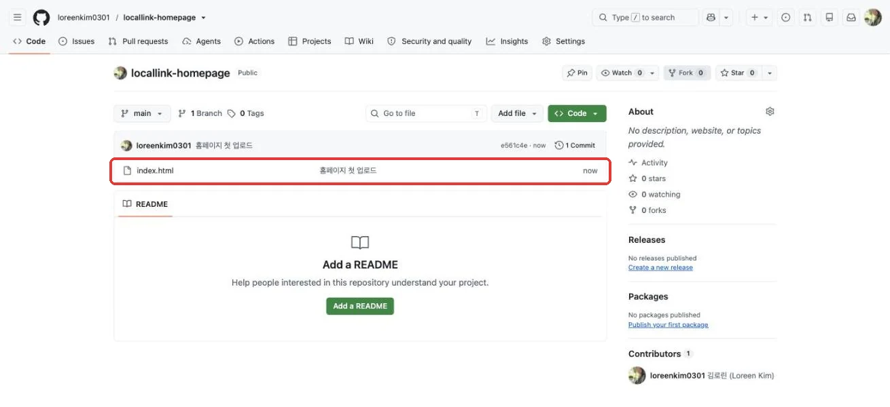
index.html과 방금 적은 커밋 메시지가 보이면 완료입니다.https://github.com/내아이디/locallink-homepage는 소스코드를 보관한 곳의 주소입니다. 이 주소로 들어가면 홈페이지 화면이 아니라 파일 목록과 코드가 보입니다. 다른 사람이 홈페이지 화면을 볼 수 있는 웹사이트 주소는 4장에서 배포해야 만들어집니다.index.html을 클릭 → 오른쪽 위 다운로드(Download raw file) 아이콘을 누릅니다.3.2에서 손으로 했던 업로드를 이번에는 ChatGPT 데스크톱 앱의 Work 모드에 자연어로 요청해봅니다. 기본은 3.2의 직접 업로드이고, Work 모드는 그다음 방법입니다. 한 번 연결해두면 홈페이지를 고칠 때마다 “다시 올려줘”라고 요청해 수정 내용을 계속 반영(push)할 수 있습니다.
index.html을 첨부합니다.아래 GitHub 레포지토리에 첨부한 index.html 코드를 업로드해줘. 레포지토리 주소: https://github.com/내아이디/locallink-homepage - 기존 index.html이 있으면 첨부한 파일로 교체 - 커밋 메시지는 '홈페이지 내용 업데이트'로 작성 - 업로드 전에 권한 승인이나 내가 확인해야 할 작업이 있으면 먼저 알려줘
index.html이 바뀌었는지 확인합니다.
https://github.com/…/test2222.git)와 함께 업로드를 요청하자, index.html 생성 → 커밋 → main 브랜치 push까지 완료하고 결과를 알려준 화면입니다. 이 컴퓨터에는 GitHub 로그인 정보가 이미 저장되어 있어서, GitHub 플러그인을 연결하지 않고도 push까지 끝났습니다.한 번 업로드한 뒤에는 같은 Work 대화에서 수정과 업로드를 이어갈 수 있습니다. 4장에서 Vercel과 연결해두면, push할 때마다 인터넷 주소의 홈페이지도 자동으로 새 버전으로 바뀝니다.
방금 수정한 index.html을 같은 GitHub 레포지토리에 다시 올려줘. - 기존 index.html을 수정한 버전으로 교체 - 커밋 메시지는 이번에 바꾼 내용을 한 줄로 요약해서 작성 - push가 끝나면 커밋 내용과 결과를 간단히 알려줘
1~2번이 잘 되었다면 건너뜁니다. Work에서 GitHub 업로드가 계속 실패할 때만 진행합니다.
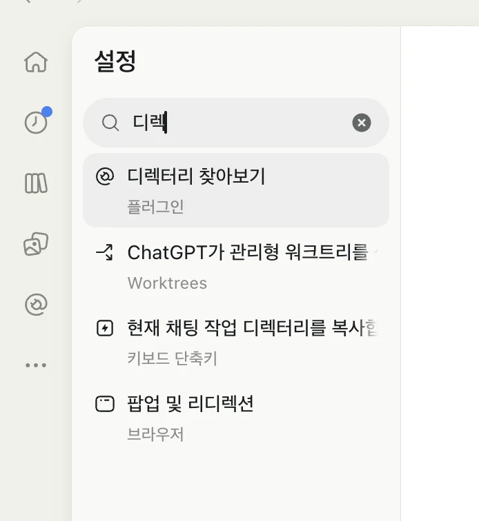
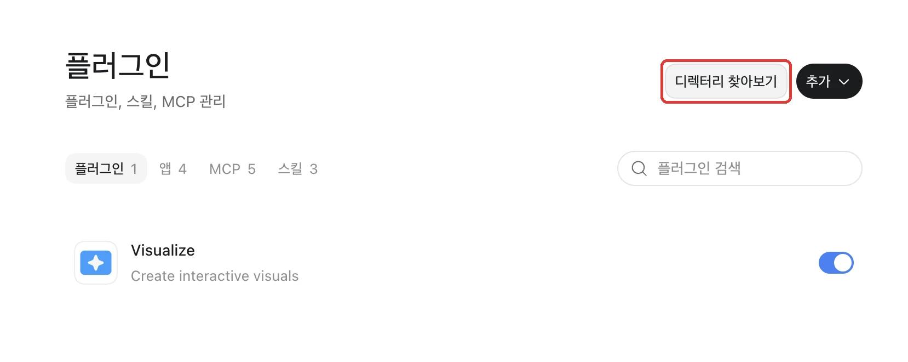
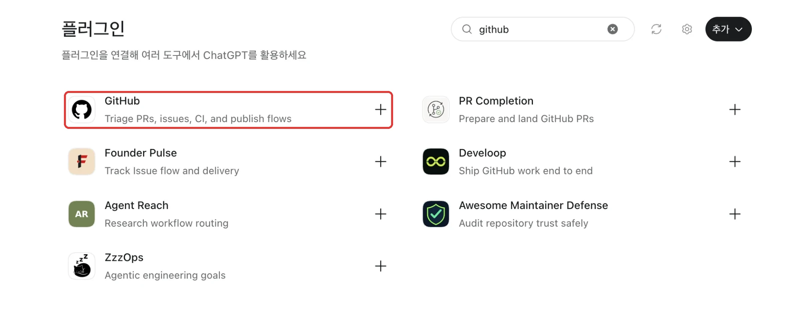
참고 · ChatGPT Work 공식 가이드 — ChatGPT 데스크톱 앱에서 Work를 전환하는 방법과 기본 사용 방식을 확인할 수 있는 OpenAI 공식 안내입니다.
↗ Work 공식 가이드 보기
GitHub에 올린 소스코드를 인터넷에서 누구나 접속할 수 있는 주소로 공개합니다. 기본은 GitHub와 연결되는 Vercel이고, 선택으로 가입 없이 파일만 끌어다 놓아 배포하는 Netlify Drop과, ChatGPT Work와 GitHub Pages로 배포하는 방법도 살펴봅니다.
Vercel은 GitHub에 올려둔 소스코드를 가져가 누구나 접속할 수 있는 웹사이트 주소로 만들어주는 서비스입니다. 3장에서 만든 Repository를 연결하면, 이후 GitHub에 올릴 때마다 자동으로 다시 배포됩니다.
locallink-homepage 옆의 Import 버튼을 누릅니다.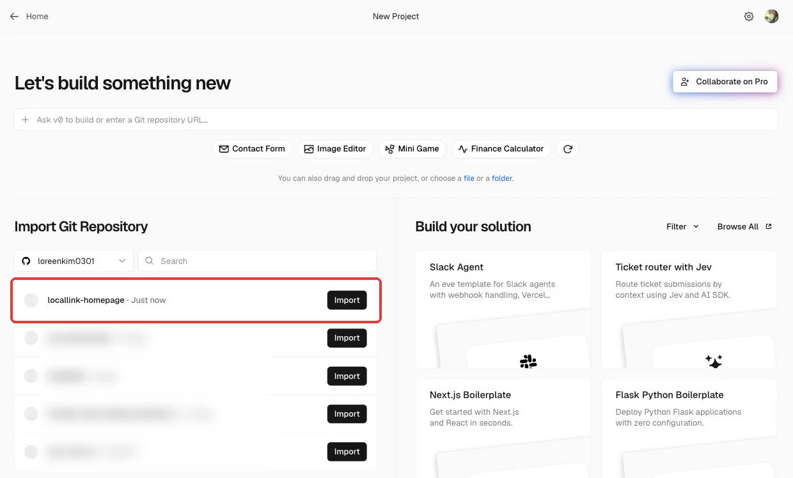
locallink-homepage 옆의 Import를 누릅니다. (다른 Repository 이름은 가림 처리했습니다.)https://프로젝트이름.vercel.app)가 됩니다. 영문 소문자·숫자·하이픈(-)만 쓸 수 있으며, 기본값으로 Repository 이름이 들어가 있습니다.index.html 한 파일짜리 프로젝트는 설정할 것이 없습니다.Other로 자동 선택되면 그대로 둡니다../ 그대로 둡니다. (index.html이 Repository 맨 바깥에 있어야 합니다.)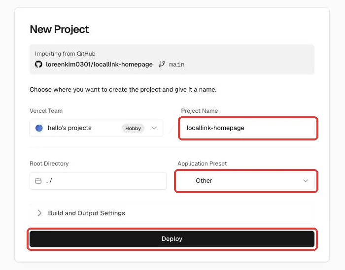
./, Application Preset Other는 그대로 둔 채 Deploy를 누릅니다.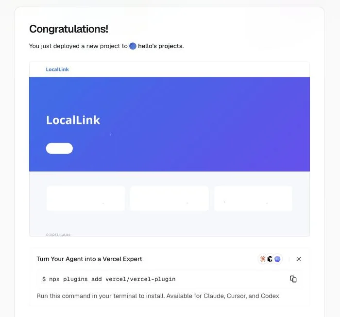
프로젝트이름.vercel.app이 공유할 공식 주소입니다. 같은 이름이 이미 있으면 뒤에 글자가 붙은 주소가 만들어질 수 있습니다.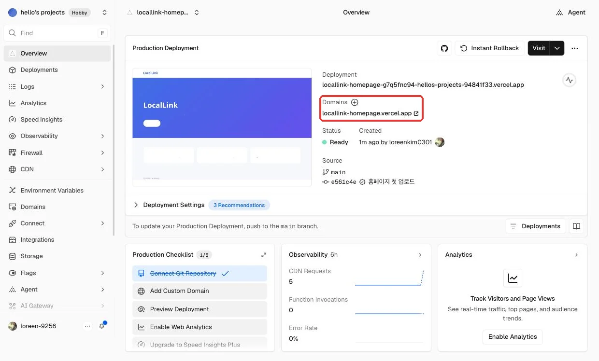
locallink-homepage.vercel.app)가 공유할 주소이고, Status가 Ready, Source에 GitHub 커밋 메시지가 보이면 정상입니다.프로젝트이름-abc123-아이디.vercel.app처럼 긴 주소도 보입니다. 이것은 배포할 때마다 새로 생기는 버전별 주소입니다. 고객이나 동료에게는 항상 짧은 Domains의 주소를 공유합니다. 배포가 실패하면 Deployments에서 상태가 Error로 표시되고, 눌러보면 원인이 나옵니다. 대부분은 파일 이름(index.html)이나 위치 문제입니다.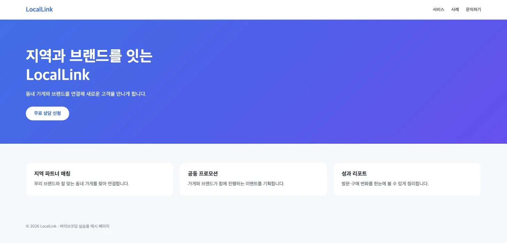
https://locallink-homepage.vercel.app으로 접속한 실제 화면입니다. 이제 이 주소를 누구에게나 공유할 수 있습니다.https://프로젝트명.vercel.app
Netlify Drop은 GitHub 없이 파일이 든 폴더를 브라우저에 끌어다 놓기만 하면 바로 인터넷 주소가 만들어지는 배포 방법입니다. 시안을 빠르게 공유할 때 유용하지만, 수정할 때마다 폴더를 다시 올려야 하므로 계속 운영할 사이트는 4.1 Vercel 방식을 권장합니다.
locallink-homepage)를 만들고 그 안에 index.html을 넣습니다. 파일 이름이 index.html이어야 첫 화면으로 열립니다.https://임의의이름.netlify.app 형태의 주소가 만들어집니다. 새 브라우저와 스마트폰에서 열어봅니다.GitHub와 연결되어, GitHub에 올릴 때마다 자동으로 다시 배포됩니다.
계속 수정·운영할 홈페이지에 적합
GitHub 없이 폴더를 끌어다 놓으면 끝납니다. 수정하면 폴더를 다시 올립니다.
시안을 빠르게 한 번 공유할 때 적합
GitHub Pages는 GitHub Repository에 있는 HTML을 GitHub가 직접 웹사이트로 공개해주는 무료 기능입니다. Vercel 같은 별도 서비스에 가입하지 않고, GitHub 하나로 보관과 배포를 모두 할 수 있습니다. 이 파트는 ChatGPT Work에 프롬프트로 요청하며 진행합니다.
| 준비 항목 | 확인 방법 |
|---|---|
| GitHub 계정 | 3.1에서 만든 계정. 이메일 인증이 끝나 있어야 합니다. |
| Public Repository | 3.1에서 만든 Repository가 Public인지 이름 옆 표시로 확인합니다. |
| ChatGPT Work 사용 가능 계정 | ChatGPT 데스크톱 앱에서 Work 탭이 보여야 합니다. |
| Work에서 GitHub에 올릴 수 있는 상태 | 3.3에서 Work로 업로드해 본 적이 있으면 준비된 것입니다. 처음이라면 Work가 요청하는 GitHub 로그인·승인을 진행하고, 그래도 안 되면 3.3의 (필요할 때) GitHub 플러그인 연결하기를 참고합니다. 플러그인에서 특정 Repository만 허용했다면 오늘 쓸 Repository가 포함되어 있어야 합니다. |
| Repository 맨 바깥의 index.html | 폴더 안이 아니라 Repository 첫 화면 목록에 index.html이 보여야 합니다. |
index.html을 첨부합니다.첨부한 index.html을 아래 GitHub 레포지토리에 올리고, GitHub Pages로 배포할 수 있게 준비해줘. 레포지토리 주소: https://github.com/내아이디/locallink-homepage
main / (root)로 선택하고 Save를 누릅니다.https://내아이디.github.io/locallink-homepage/입니다. Settings → Pages 상단에 “Your site is live at …”이 보이면 완료입니다. 새 브라우저와 스마트폰에서도 열어봅니다.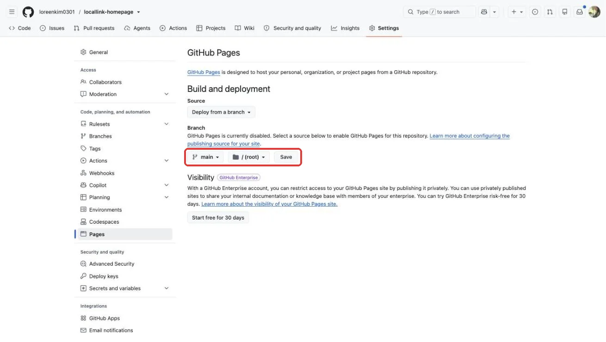
main / (root)를 고르고 Save를 누릅니다.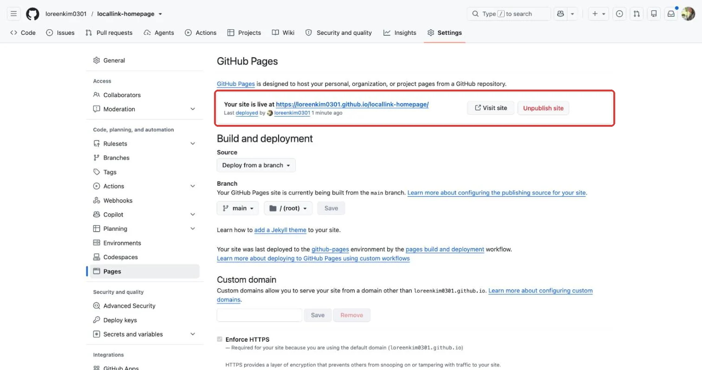
GitHub Pages 주소 https://내아이디.github.io/locallink-homepage/ 가 열리지 않아. 아래를 순서대로 확인하고, 문제가 있는 항목과 고치는 방법을 알려줘. - 레포지토리가 Public인지 - index.html이 루트에 있고 파일 이름이 모두 소문자인지 - Settings → Pages의 Source가 main 브랜치 / (root)로 되어 있는지 - Actions 탭의 pages-build-deployment 작업이 성공했는지 직접 고칠 수 있는 부분은 고쳐서 push하고, 내가 해야 할 부분은 메뉴 순서대로 알려줘.
main 브랜치에 push될 때마다 자동으로 다시 배포됩니다. 반영까지 1~2분 걸리며, 바로 안 보이면 강력 새로고침(Ctrl/Cmd + Shift + R)합니다.현재 홈페이지에서 [수정할 내용]만 수정하고, 같은 레포지토리의 main 브랜치에 다시 push해줘. - 커밋 메시지는 바꾼 내용을 한 줄로 요약 - 요청하지 않은 부분은 변경하지 마 - push 후 GitHub Pages 주소에 반영되었는지 확인하는 방법을 알려줘
Private Repository도 배포할 수 있습니다(개인 계정). 주소: 프로젝트이름.vercel.app
무료 플랜은 개인·비상업용
무료 계정은 Public Repository만 가능합니다. 주소: 내아이디.github.io/저장소이름
별도 가입 없이 GitHub 하나로 보관과 배포
2.3에서 만든 문의하기 화면은 새로고침하면 입력한 내용이 사라졌습니다. 이번에는 문의 내용이 실제로 어딘가에 쌓이도록 연결해봅니다. 모두 무료 플랜에서 가능한 방법이며, 가장 쉬운 Netlify Forms부터 진짜 데이터베이스(DB)인 Supabase, 선택으로 구글 스프레드시트까지 살펴봅니다.
세 방법 모두 “데이터가 쌓이는 경험”까지는 무료로 충분합니다. 하지만 실제 서비스로 운영하려고 할 때 각각 막히는 지점이 다릅니다. 먼저 무엇이 안 되는지 알고 고르면 시행착오를 줄일 수 있습니다.
| 구분 | Netlify Forms (5.1) | Supabase (5.2) | 구글 스프레드시트 (5.3 · 선택) |
|---|---|---|---|
| 한마디로 | 폼에 한 줄 붙이면 접수되는 접수함 | 로그인·권한까지 되는 진짜 DB | 익숙한 시트에 쌓이는 간이 장부 |
| 저장 | ○ | ○ | ○ |
| 저장한 내용을 홈페이지 화면에 다시 보여주기 | ✕ 관리 화면·CSV로만 확인 | ○ (읽기 권한을 따로 설정) | △ 가능하지만 시트 내용이 누구에게나 공개됨 |
| 로그인 · 사용자별 권한 | ✕ | ○ (직접 설정해야 함) | ✕ |
| 아무나 데이터를 넣는 것 막기 | △ 기본 스팸 필터만 | ○ 권한 규칙(RLS)으로 제어 | ✕ 주소만 알면 누구나 입력 가능 |
| 자동 백업 · 복구 | ✕ (CSV로 직접 내려받기) | ✕ 무료 플랜 미포함 | △ 시트 변경 기록으로 일부 복구 |
| 무료 한도 · 멈추는 조건 | 폼 제출은 무제한 무료. 단, 월 300 크레딧(트래픽·배포)을 다 쓰면 사이트 전체가 다음 달까지 멈춤 | DB 500MB, 프로젝트 2개. 1주일간 사용이 없으면 자동 일시정지 | 스크립트 1회 실행 최대 6분, 동시 실행 제한 있음, 시트당 1,000만 셀 |
| 다른 배포 서비스와 함께 쓰기 | ✕ Netlify에 배포한 사이트에서만 | ○ Vercel·GitHub Pages·Netlify 모두 | ○ Vercel·GitHub Pages·Netlify 모두 |
| 비개발자 난이도 | 아주 쉬움 | 어려움 | 쉬움 |
| 잘못 쓰면 생기는 위험 | 낮음 | 권한 설정을 빠뜨리면 전체 데이터 노출·삭제 | 데이터 공개·장난 입력으로 오염 |
| 잘 맞는 용도 | 문의·사전 신청·구독처럼 “받기만” 하면 되는 폼 | 로그인이 있는 MVP, 게시판·예약처럼 읽고 쓰는 서비스 | 소규모 설문, 운영자 혼자 보는 내부 장부 |
가장 쉬운 방법입니다. 문의 폼 HTML에 data-netlify="true"를 붙이고 Netlify에 배포하면, 고객이 보낸 문의가 Netlify 관리 화면에 차곡차곡 쌓입니다. 별도 DB나 서버 코드가 필요 없습니다.
index.html을 첨부합니다.첨부한 index.html의 '문의하기' 폼이 Netlify Forms로 접수되도록 수정해줘. [수정할 내용] - form 태그에 name="contact", method="POST", data-netlify="true" 추가 - 폼 안에 <input type="hidden" name="form-name" value="contact"> 추가 - 각 입력칸에 name 속성 추가 (name, company, email, message) - 스팸 방지용 숨김 입력칸(honeypot) 추가: form에 netlify-honeypot="bot-field" - '문의 보내기'를 누르면 fetch로 "/"에 POST 전송 · Content-Type은 application/x-www-form-urlencoded · body는 new URLSearchParams(new FormData(form)).toString() - 전송 성공 시 '문의가 접수되었습니다', 실패 시 '전송에 실패했습니다. 잠시 후 다시 시도해주세요' 표시 - 폼 위 안내 문구를 '입력하신 내용은 상담 목적으로만 사용됩니다'로 변경 [지켜줄 것] - 기존 필수 항목·이메일 형식 검사는 유지 - 다른 화면과 메뉴, 디자인은 변경하지 마
index.html과 이미지 폴더가 함께 있다면 폴더째(또는 zip 파일로) 올립니다. 끌어다 놓기가 어렵다면 browse files to upload(파일 선택) 또는 choose a folder(폴더 선택)를 누릅니다.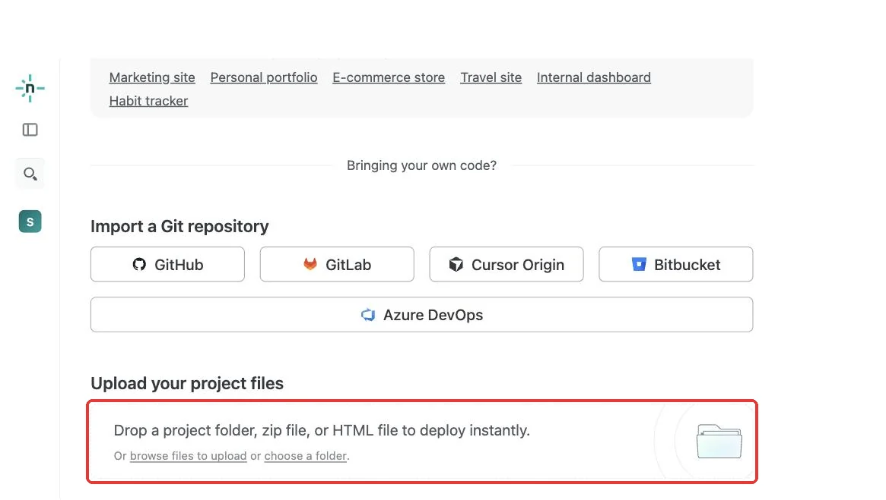
임의이름.netlify.app 주소가 생기고, 왼쪽 메뉴 맨 아래에 Forms가 있습니다.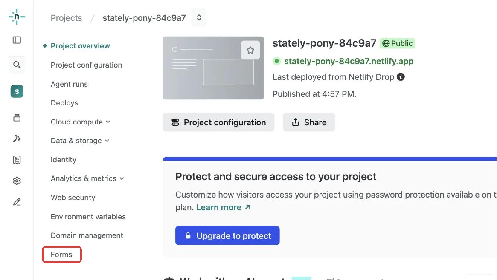
data-netlify="true" 폼을 찾아 접수함을 만들어 줍니다.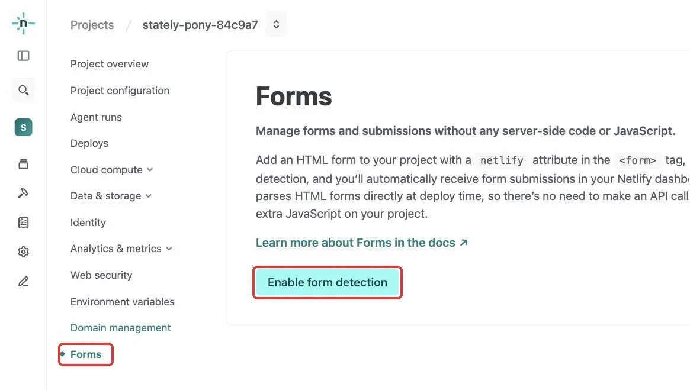
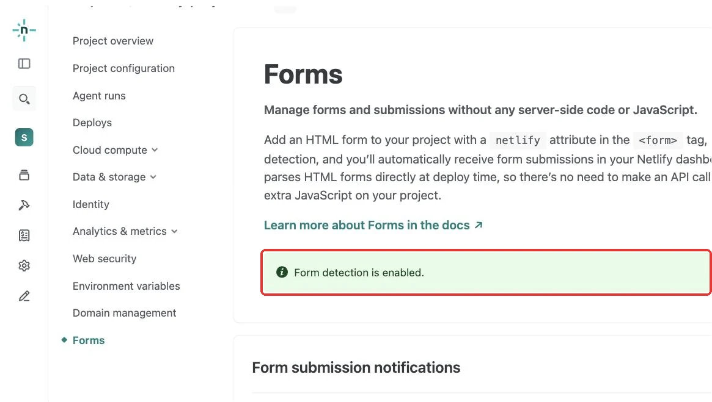
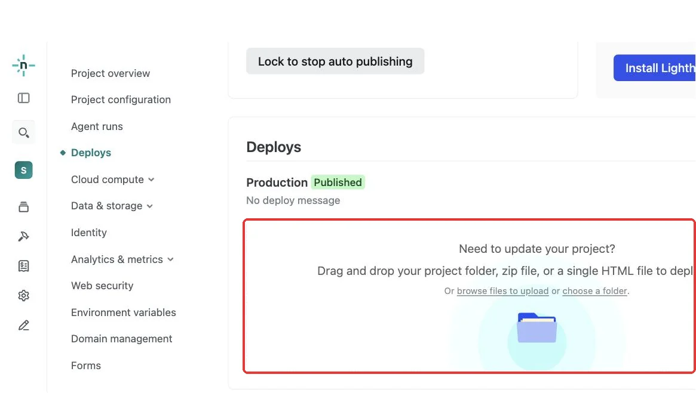
contact가 보이면 준비 완료입니다.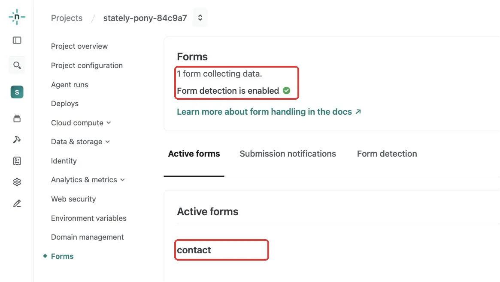
<form> 태그에 name="contact"와 data-netlify="true"가 모두 있는지, 폼이 HTML 파일 안에 직접 적혀 있는지 확인합니다. 자바스크립트로 나중에 그려지는 폼은 찾지 못합니다.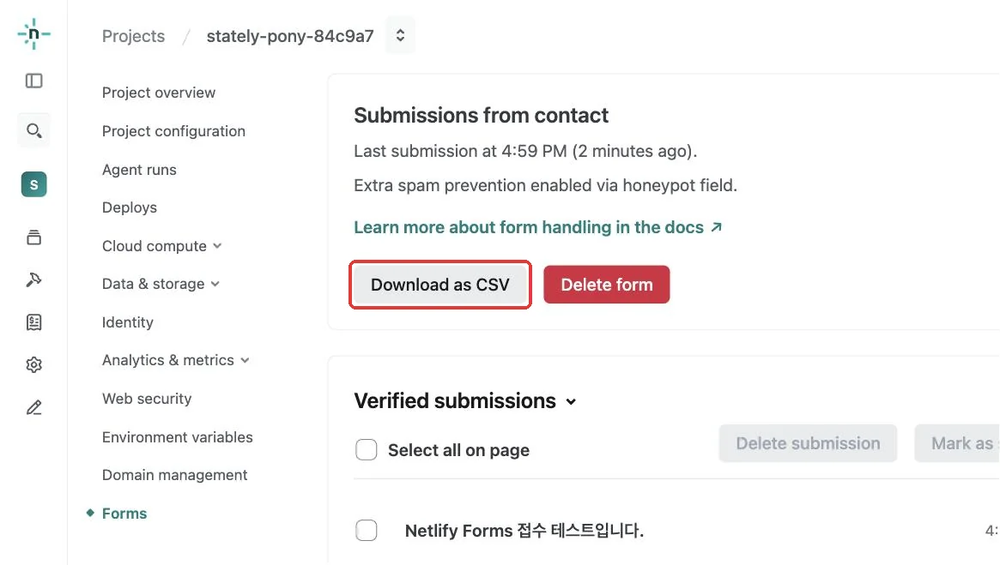
contact)을 지정해 저장합니다.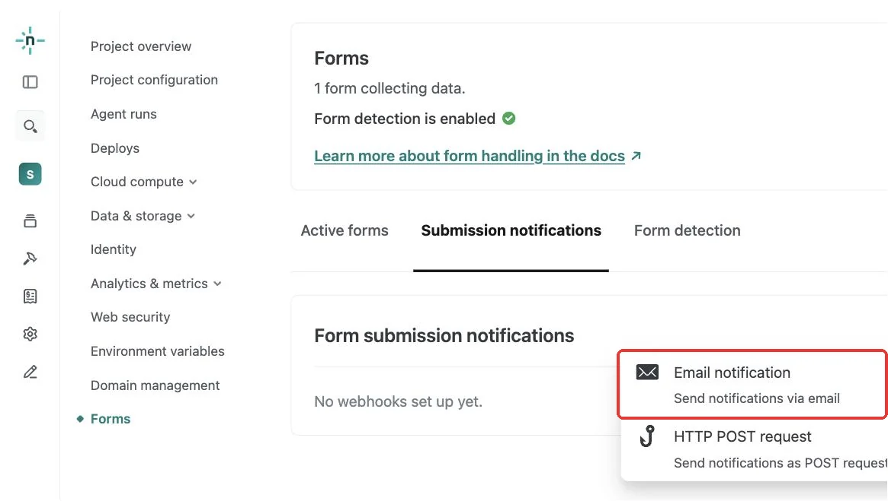
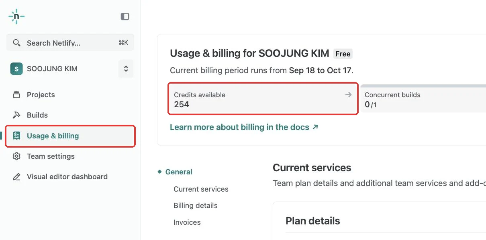
Supabase는 웹에서 바로 쓸 수 있는 데이터베이스 서비스입니다. 엑셀처럼 생긴 표(테이블)에 데이터가 저장되고, 나중에 로그인·사용자별 권한·파일 저장까지 확장할 수 있어 실제 서비스에 가장 가까운 방법입니다. 대신 권한 설정을 직접 해야 하므로 아래 순서를 꼭 지킵니다.
locallink)을 넣고, Database Password는 자동 생성 후 따로 메모해 둡니다. 지역(Region)은 한국 사용자가 많다면 Northeast Asia (Seoul)을 고릅니다.-- 1) 문의 테이블 만들기 create table public.inquiries ( id bigint generated always as identity primary key, created_at timestamptz not null default now(), name text not null, company text, email text not null, message text not null ); -- 2) 행 단위 보안(RLS) 켜기: 켜는 순간 기본값은 '아무것도 못 함' alter table public.inquiries enable row level security; -- 3) 홈페이지 방문자(anon)에게 '등록'만 허용 grant insert on public.inquiries to anon; create policy "방문자는 문의 등록만 가능" on public.inquiries for insert to anon with check (true);
inquiries 표가 생겼는지 확인합니다.https://프로젝트ID.supabase.co 형태이고, Publishable key는 sb_publishable_로 시작합니다.sb_publishable_…)는 홈페이지 코드에 들어가도 되는 공개용 열쇠입니다. 다만 이 열쇠로 할 수 있는 일은 위에서 만든 RLS 규칙이 정합니다. RLS를 끄거나 규칙을 넓히면 누구나 데이터를 읽고 지울 수 있게 됩니다.sb_secret_…)는 모든 권한을 가진 관리자 열쇠입니다. ChatGPT에 붙여넣거나 HTML에 넣거나 GitHub에 올리면 안 됩니다.anon 키는 Publishable key의 이전 이름이고, service_role 키는 Secret key의 이전 이름입니다.index.html을 첨부하고 아래 프롬프트에 URL과 Publishable key를 넣어 요청합니다.첨부한 index.html의 '문의하기' 폼이 Supabase에 저장되도록 수정해줘. [연결 정보] - Project URL: https://프로젝트ID.supabase.co - Publishable key: sb_publishable_로 시작하는 키 - 테이블: inquiries (컬럼: name, company, email, message) [수정할 내용] - Supabase 공식 자바스크립트 라이브러리를 CDN으로 불러와서 사용 - '문의 보내기'를 누르면 inquiries 테이블에 insert - insert 후 select로 다시 읽어오지 마 (방문자에게는 등록 권한만 있음) - 성공 시 '문의가 접수되었습니다', 실패 시 '전송에 실패했습니다' 표시 - 화면 아래 '접수된 문의 목록'은 삭제 [지켜줄 것] - 기존 필수 항목·이메일 형식 검사는 유지 - 다른 화면과 메뉴, 디자인은 변경하지 마
구글 스프레드시트에 붙어 있는 Apps Script로 “데이터를 받아 시트에 한 줄 추가하는 주소(웹 앱)”를 만들고, 홈페이지 문의 폼이 그 주소로 보내게 합니다. 수강생에게 익숙한 시트에 바로 쌓이기 때문에 “DB에 데이터가 들어간다”는 감각을 익히기 좋습니다.
접수일시 · 이름 · 회사명 · 이메일 · 문의내용function doPost(e) {
const lock = LockService.getScriptLock();
lock.waitLock(10000); // 동시에 여러 건이 들어와도 한 줄씩 차례로 기록
try {
const d = JSON.parse(e.postData.contents);
// =, +, -, @ 로 시작하는 값이 수식으로 실행되지 않도록 막기
const safe = v => {
const s = String(v || '').slice(0, 2000);
return /^[=+\-@]/.test(s) ? "'" + s : s;
};
SpreadsheetApp.getActiveSpreadsheet().getSheets()[0].appendRow([
new Date(), safe(d.name), safe(d.company), safe(d.email), safe(d.message)
]);
return ContentService.createTextOutput(JSON.stringify({ ok: true }))
.setMimeType(ContentService.MimeType.JSON);
} catch (err) {
return ContentService.createTextOutput(JSON.stringify({ ok: false }))
.setMimeType(ContentService.MimeType.JSON);
} finally {
lock.releaseLock();
}
}
https://script.google.com/macros/s/…/exec 형태입니다.index.html을 첨부하고 아래 프롬프트로 연결을 요청합니다.첨부한 index.html의 '문의하기' 폼이 구글 스프레드시트에 저장되도록 수정해줘.
[연결 정보]
- 웹 앱 URL: https://script.google.com/macros/s/…/exec
[수정할 내용]
- '문의 보내기'를 누르면 위 URL로 fetch POST 전송
- body는 {name, company, email, message}를 JSON.stringify한 문자열
- Content-Type 헤더는 넣지 마 (브라우저 보안 오류 방지)
- 성공 시 '문의가 접수되었습니다', 실패 시 '전송에 실패했습니다' 표시
- 화면 아래 '접수된 문의 목록'은 삭제
[지켜줄 것]
- 기존 필수 항목·이메일 형식 검사는 유지
- 다른 화면과 메뉴, 디자인은 변경하지 마
오늘 배운 방법은 프로토타입에서 데이터가 쌓이는 흐름을 확인하는 용도로 충분합니다. 실제 고객의 개인정보를 받거나 로그인·결제가 있는 서비스로 운영하려면 아래 항목을 먼저 점검하고, 필요하면 개발자와 함께 검토합니다.
| 방법 | 오늘의 역할 | 추천 상황 |
|---|---|---|
| ChatGPT 채팅 | 빠른 프로토타입 | 아이디어를 화면으로 먼저 확인할 때 |
| GitHub (직접 업로드 · Work 모드) | 소스코드 보관·변경 이력 관리 | 직접 업로드로 익힌 뒤, 반복되는 업로드와 수정 반영을 Work 모드에 맡길 때 |
| Vercel (선택: Netlify Drop · GitHub Pages) | 실제 배포 | 계속 수정하고 운영할 웹사이트가 필요할 때 · 빠른 1회 공유는 Netlify Drop · Public 저장소를 GitHub 하나로 공개할 때는 GitHub Pages |
오늘 여러분은 아이디어를 말로 설명해 화면을 만들고, 그 결과를 고치고, GitHub에 보관한 뒤 실제 인터넷 주소로 공개하는 과정을 처음부터 끝까지 직접 해냈습니다. 이것으로 바이브코딩 입문 과정을 완료했습니다.
코드를 모두 이해해야 시작할 수 있는 것은 아닙니다. 오늘처럼 작게 만들고, 보여주고, 고치는 과정을 반복하면 필요한 기술은 자연스럽게 따라옵니다. 이제 LocalLink 대신 내 사업 아이디어로 첫 화면을 만들어보세요.